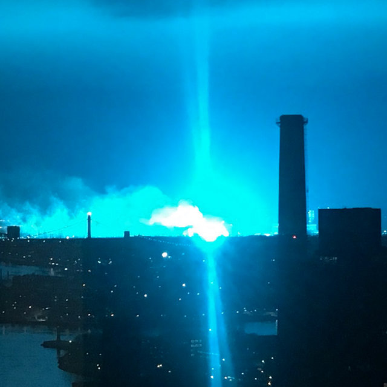

MANHATTAN, NEW YORK — Millions of New Yorkers were left in darkness last night after a massive power outage swept across several districts of the city. The blackout, which began shortly after 8:00 PM, disrupted transportation systems, businesses, residential buildings, and emergency services, creating one of the most significant infrastructure failures in recent years. Witnesses throughout Manhattan reported seeing intense flashes of blue light moments before power systems began shutting down. Several residents described what appeared to be electrical arcs traveling between buildings, illuminating the skyline before entire blocks lost electricity. Emergency services were immediately overwhelmed with reports of stalled elevators, disabled traffic signals, and subway service interruptions. Hundreds of commuters were stranded across the city as transportation officials worked to restore critical systems. Utility providers initially suspected a technical malfunction within the city's electrical grid. However, investigators later revealed that evidence collected from multiple locations may indicate the involvement of the super-powered criminal known as Electro. According to eyewitness accounts, a figure surrounded by electrical energy was seen moving through affected districts shortly before the blackout occurred. Several recordings posted online appear to show bursts of blue energy striking utility infrastructure moments before nearby systems failed. Businesses across Manhattan reported significant financial losses due to the outage. Restaurants were forced to discard perishable inventory, retail stores suspended operations, and office buildings activated emergency backup systems while employees waited for power to return. Hospitals and emergency response facilities relied heavily on reserve generators to maintain operations. City officials praised emergency personnel for preventing what could have become a far more serious situation. Transportation authorities described the event as one of the most disruptive electrical incidents in recent memory. Subway delays continued for hours after power was restored, while traffic congestion affected major routes throughout Midtown and Lower Manhattan. Several witnesses also reported seeing Spider-Man near multiple blackout locations. While authorities have not confirmed any connection between the vigilante and the incident, social media users quickly began speculating that Spider-Man may have been attempting to stop Electro during the event. Experts analyzing the incident noted similarities to previous attacks associated with Electro. The unusual electrical signatures detected throughout the city closely match patterns observed during earlier encounters involving the criminal. Power was gradually restored throughout the night as utility crews worked to stabilize damaged infrastructure. Officials confirmed that no fatalities were directly linked to the outage, though several minor injuries were reported during evacuation efforts. Investigators continue to review surveillance footage and electrical grid data in an effort to determine the exact cause of the blackout. Until the investigation is complete, authorities have urged residents to remain alert and report any unusual electrical activity immediately. For now, New York faces yet another reminder of the growing threats confronting the city. Whether the blackout was the work of Electro or another unknown factor, citizens are once again left wondering when the next crisis will strike.
ELECTRO CAUSES CITYWIDE BLACKOUT
Thousands Left Without Power During Mysterious Energy Surge Across Manhattan

EDITORIAL COMMENT
Another day. Another disaster. Millions of people lose power. Businesses shut down. Public transportation collapses. Emergency services are stretched to their limits. And somehow, whenever one of these so-called superhuman incidents occurs, Spider-Man is never far away. New Yorkers deserve answers. Why does this city continue to attract dangerous individuals capable of bringing entire districts to a standstill? Why are citizens expected to accept blackouts, explosions, and public chaos as part of daily life? Supporters claim Spider-Man protects the city. Yet every major incident seems to leave behind damaged infrastructure, frightened civilians, and unanswered questions. The Daily Bugle refuses to celebrate disorder. The people of New York deserve safety, accountability, and transparency—not masked vigilantes and electrically charged criminals turning our city into a battlefield.
— J. Jonah Jameson
Editor-in-Chief, The Daily Bugle